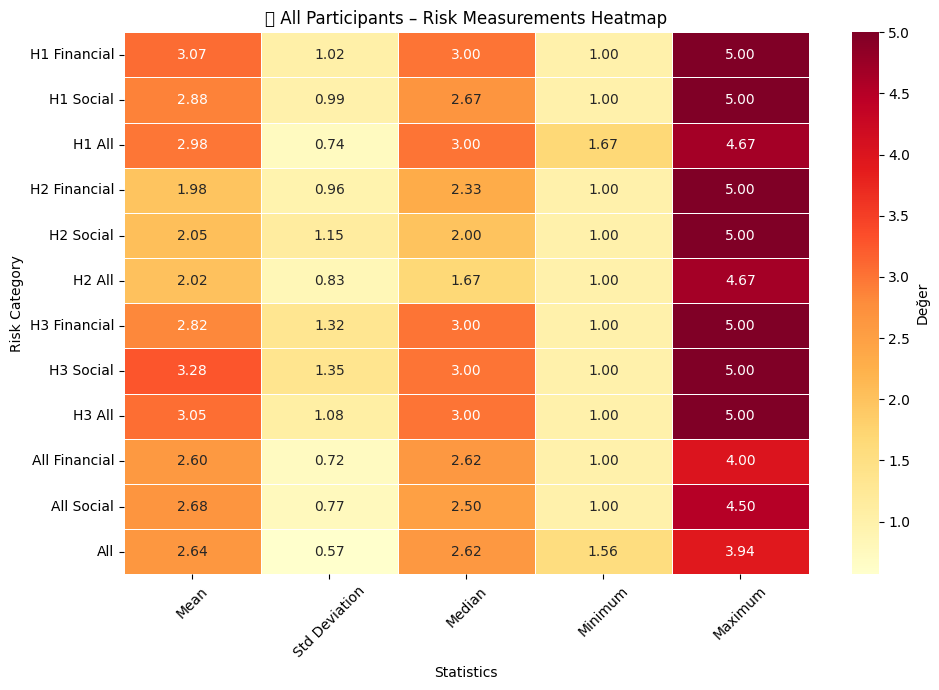
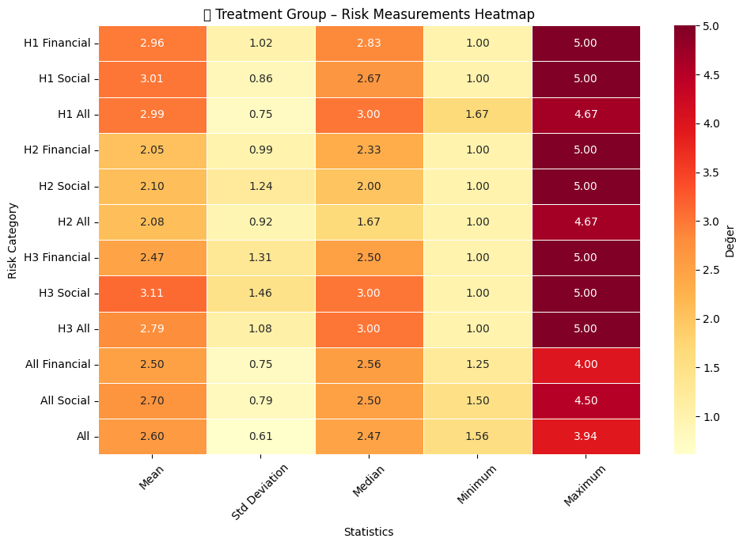
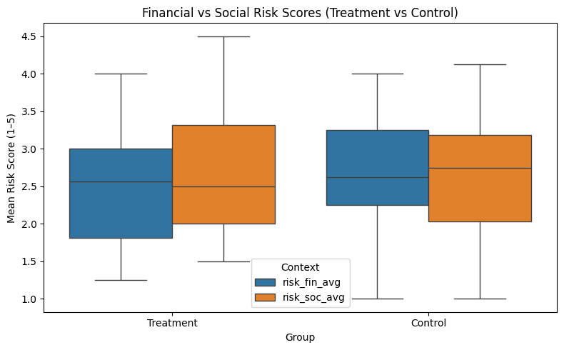
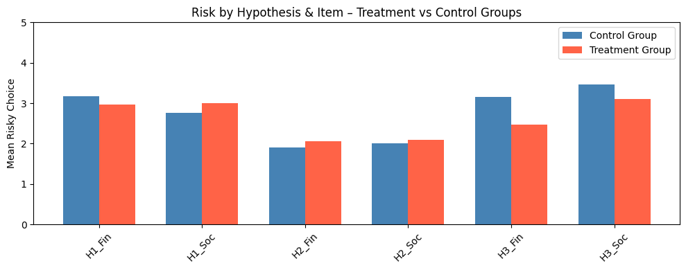
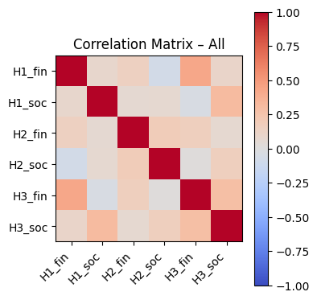
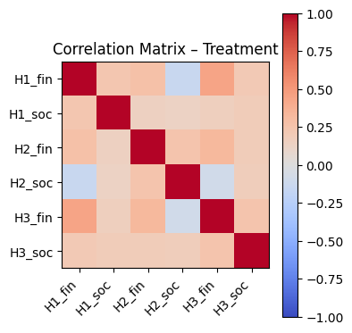
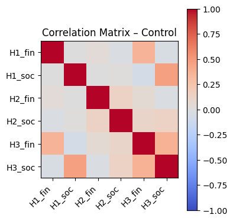
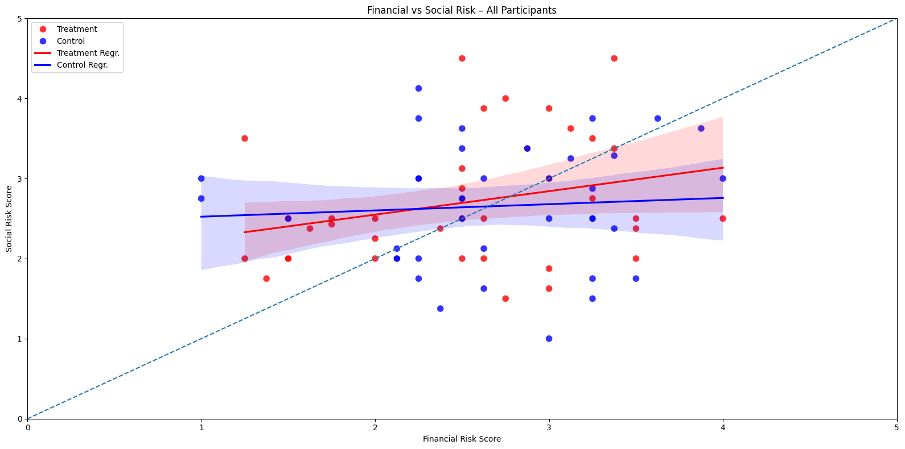

The Impact of External Information and Social Framing on Risky Choices
Experimental Economics Project • Boğaziçi University
View Full Report (PDF)Introduction & Framework
This study explores whether external cues (such as peer information or social responsibility) lead to a divergence between individuals’ financial and social risk-taking. We grounded our research in Festinger's Social Comparison Theory, the Ellsberg Paradox (Ambiguity Aversion), and findings on Prosocial Risk Aversion.
- Methodology Online Survey Experiment
- Design Control vs. Treatment Groups
- Date May 2025 (EC438 Group Project)
Tested Hypotheses
Observing others’ choices increases risk appetite.
Unclear probabilities reduce risk-taking.
Deciding for others increases caution.
Experimental Design
An online survey experiment was conducted with participants answering binary choice questions under risk and uncertainty. The treatment group received additional information cues: peer decisions, hidden probabilities, or delegated responsibility.
Visual Analysis of Results
1. Heatmaps of Risk Scores



2. Risk Distributions


3. Hypothesis Testing Results

4. Correlation Analysis



5. Regression Analysis

Key Findings & Conclusion
- H1 & H2 (Insignificant): Social comparison and ambiguity did not meaningfully alter risk behavior in this sample.
- H3 (Significant): When deciding for others, participants took fewer financial risks (p < 0.05), confirming Prosocial Risk Aversion.
- Overall: External info reduced financial risk-taking more than social risk-taking.
Results suggest that social responsibility strongly increases caution in financial risk-taking, while peer effects and ambiguity had limited impact. Correlations show financial and social risk behaviors are weakly aligned, with external information narrowing differences.